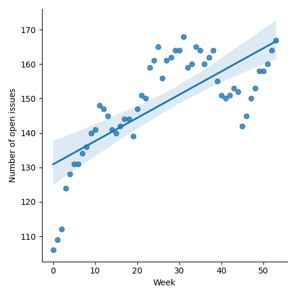
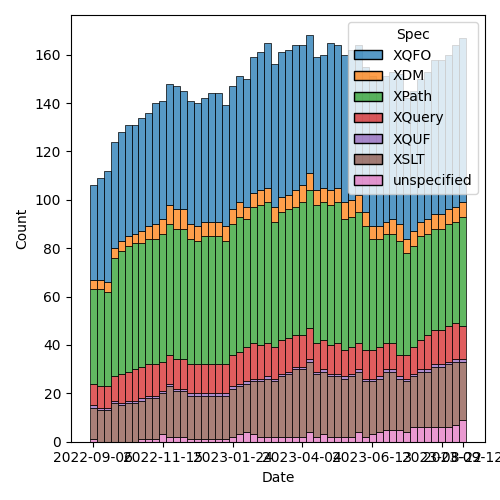
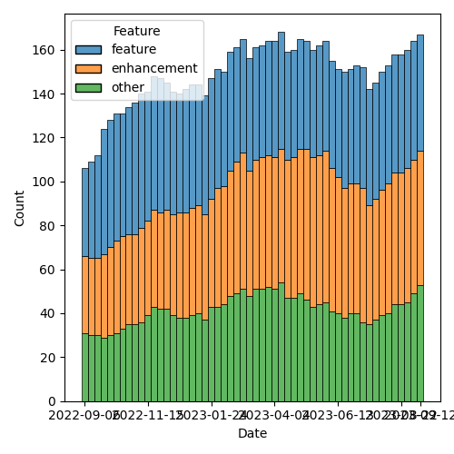

QT4 CG Meeting 046 Minutes 2023-09-19
Table of Contents
- Draft Minutes
- Summary of new and continuing actions
[1/10] - 1. Administrivia
- 2. Technical Agenda
- 3. Any other business?
- 4. Adjourned
Agenda index / QT4CG.org / Dashboard / GH Issues / GH Pull Requests
Draft Minutes
Summary of new and continuing actions [1/10]
[ ]QT4CG-029-07: NW to open the next discussion of #397 with a demo from DN- See PR #449. Discussion planned for meeting 048, 3 October 2023.
[ ]QT4CG-045-02: RD to address comments on HTML namespaces in another PR[ ]QT4CG-046-01: MK to continue the work on #129 for the other specs (we accepted #703)[ ]QT4CG-046-02: RD to draft the specification changes to allow record(*)[ ]QT4CG-046-03: MK to roll back the changes related to default namespaces for elments and types (issue #372)[ ]QT4CG-046-04: CG to flesh out changes related to annotations in other parts of the specs[ ]QT4CG-046-05: NW to updated parse-uri to use decode-from-uri (issue #566)
1. Administrivia
1.1. Roll call [10/11]
Regrets: JK.
[X]Reece Dunn (RD)[X]Sasha Firsov (SF)[X]Christian Grün (CG)[ ]Joel Kalvesmaki (JK) [:05-][X]Michael Kay (MK)[X]John Lumley (JL)[X]Dimitre Novatchev (DN)[X]Wendell Piez (WP)[X]Ed Porter (EP)[X]C. M. Sperberg-McQueen (MSM)[X]Norm Tovey-Walsh (NW). Scribe. Chair.
1.2. Accept the agenda
Proposal: Accept the agenda.
Accepted.
1.2.1. Status so far…

Figure 1: “Burn down” chart on open issues

Figure 2: Open issues by specification

Figure 3: Open issues by type
1.3. Approve minutes of the previous meeting
Proposal: Accept the minutes of the previous meeting.
Accepted.
1.4. Next meeting
The next meeting is scheduled for Tuesday, 26 September 2023.
Regrets: CG, JL may be late.
The meeting of 26 September will focus on XSLT issues.
1.5. Review of open action items [6/8]
[X]QT4CG-026-01: MK to write a summary paper that outlines the decisions we need to make on “value sequences”- This is related to PR #368: Issue 129 - Context item generalized to context value and subsequent discussion.
[ ]QT4CG-029-07: NW to open the next discussion of #397 with a demo from DN- See PR #449. Discussion planned for meeting 048, 3 October 2023.
[X]QT4CG-039-01: NW to schedule discussion of issue #52, Allow record(*) based RecordTests[X]QT4CG-042-02: NW to make the query into a simple map with repeated values.[X]QT4CG-042-03: NW to consider revisions to query parses.[X]QT4CG-045-01: MK to redraft PR #659 to reflect “search path” semantics.[ ]QT4CG-045-02: RD to address comments on HTML namespaces in another PR[X]QT4CG-045-03: MK to write a PR for context values (issue #129)- Same as QT4CG-026-01, both now covered by a PR
1.6. Review of open pull requests and issues
1.6.1. Merge without discussion
The following PRs are editorial, small, or otherwise appeared to be uncontroversial when the agenda was prepared. The chairs propose that these can be merged without discussion. If you think discussion is necessary, please say so.
- PR #703: 129 (1): XPath and XQuery changes for introduction of context value
- PR #702: 701: fn:concat: Support for 0 or more arguments
- PR #696: 566: Rework query parameters on build-uri/parse-uri
- PR #694: XQFO minor edits, with new examples and notes, 2 through 4.6
- PR #690: 687 Clarify constructor functions for user-defined types
- PR #680: 668 define case insensitive collation normatively
Accepted.
ACTION: QT4CG-046-01: MK to continue the work on #129 for the other specs (we accepted #703)
1.6.2. Substantive PRs
1.6.3. Requires confirmation
1.6.4. Proposed for V4.0
The following issues are labled “proposed for V4.0”.
2. Technical Agenda
2.1. Issue #52: Allow record(*) based RecordTests
- See issue #52
- RD: The basic gist is that with the type based item type matching
for arrays and maps, those allow typed values with a “*” based variant.
- … But records don’t have a corresponding syntax
- … MK justifies this by saying the user can use
map(*)if they want an any valued map. - … But my view is that then means the language isn’t symmetric. If
a user looks at
array(*)andmap(*), they may wonder whererecord(*)is. - … And if you’re using records as parameters and you want to allow
*, you’d have to change to using maps. That’s a cognative leap for the user. - … Also, the extensible flag at the end of the record declaration
is already a
*. - … I’d like to get consensus on this.
- MK: This isn’t a “lie down in the road” sort of question. I just
don’t see the need. If someone writes
record(*), they probably don’t understand what it means because it means any map. - DN: I agree with MK. The whole idea of having records as a special type of map is that records have well-known, fixed name properties. I think this would be totally not useful. It defeats the purpose of records.
- MSM: I’m not used to disagreeing with DN on topics like this. I don’t think
map(*)is a big hurdle, but if you’re working in a language and you normally use records, just being able to sayrecord(*)is a convient affordance.- … Users don’t always understand the whole language. I lean towards allowing it.
The chair tries to word a straw poll. Would you prefer to allow record(*)?
- In favor: 7
- Opposed: 2
- Abstain: 1
Formally then, the proposal is to allow record(*).
Does anyone object?
None heard.
Accepted.
ACTION: QT4CG-046-02: RD to draft the specification changes to allow record(*)
- MK: Make sure the subsumption rules handle this case.
2.2. Issue 372: Separate default namespace for elements from the default namespace for types
- See issue #372
- MK: This is one of the things that was in the draft spec that we put up at the beginning of the process.
- RD: In plugin, I’ve gone through and implemented this part of the spec. It’s nice, straightforward and I’m favor of it.
MK reviews the issue.
- MK: I would expect most users want to make the XML Schema namespace
the default namespace for types so that you can say
as=integerinstead ofas=xs:integer.- … The complication is how to manage the backwards compatibility.
- … Although the facility is in the current draft, the issue observes that it’s incomplete.
- MK: We have other option issues, for example, default namespaces for input and output, but this doesn’t attempt to solve those issues.
- DN: We don’t have types as first class objects, so we’re really talking about type names.
- … For a long time, I’ve considered this namespacing artificial and unnecessary in any context except XML elements and attributes.
- … We’ve started using XML namespaces for many things that are not XML items. As such, I think we should revisit the whole namespace concept for anything that isn’t part of an XML document.
- … I’m concerned that allowing
integermay be confusing for users and I don’t see any value in it.
- MSM: I will observe that when I teach XPath to users who don’t
already know it. For the first half or two-thirds of the course, I
use the full syntax not the abbreviated syntax. Because it’s easier
to understand and learn. The shorter syntax is of know value to a learner.
- … When you find yourself thinking “do I have to type all these characters” in six months, then look at the shorter syntax.
- … I almost never change the default namespace and when I do I regret it. For me, this doesn’t seem to have any value. And I’m concerned about the backwards incompatibilities. I find it clearer if things in namespaces are labeled and I don’t have to remember what declaration is in scope.
- … But because I don’t use this, I don’t have an good sense of who would find this useful.
- … With respect to the broader question, namespaces are good for distributed extensibility and I would want to keep them.
- … Having types and elements in the same namespaces, might be because they are to types that you’ve defined in your schema. Your elements and types are likely to be in the same namespace so it’s convenient to default them the same way. The fact that MK can say with a same straight face that the vast majority of types names are references to the “xs:” namespace, leads me to think that that’s not the world we live in.
- RD: On the point of revisiting namespaces for functions in general,
I’d be strongly opposed to that. In the company I work for, we
extensively use multiple modules and have different namespaces for
the functions in those modules. Not having namespaces would make it
a lot harder to manage and maintain large, complicated XQuery
programs, especially considering that other languages like C++, C#,
Java, all support namespaces.
- … In regard to setting the default element namespace, I’ve set it occasionally to the XHTML namespace because it makes writing XHTML templates and things a little easier.
- … I wonder if we should look at whether it’s worth splitting the references in the specification. In effect, the current syntax would set both the default element and type namespace. (Something about spec changes vs. language changes that the scribe isn’t clear he successfully captured.)
- DN: I fully agree with everything MSM said. I didn’t propose to abolish namespacing functions, but I think that we have good examples from other programming languages for much more meaningful namespaces for functions. I’m not saying we should abolish namespaces, I only want to raise the idea to consider and review a better namespacing mechanism such as we have in other programming languages.
- SF: In our conversation, we have a little bit of history. HTML dropped namespaces. JSON didn’t add namespaces. Users expect to work in a limited namespace and defaults allow users to do that. If we aren’t careful, we’ll make the situation worse. We could learn from C# about how to manage namespace scopes better.
- MK: I agree with everything everyone has said, the question is what
should we do about it. The primary problem we’re trying to solve
isn’t solved by this separation. Every new user falls into the trap
of using an unqualified name and finds that their expression selects
nothing. We can’t fix it because of compatibility reasons.
- … We keep adding layers of sticky plaster to the namespaces issue in an effort to solve that fundamental problem. But each time, it just adds complexity and makes things wors.
- … We also need to take account of the HTML5 willful violation of the specification which says that an unqualified name in an XPath expression in that context selects an HTML element.
- … One thing I’ve done in informal interfaces is introduce the idea that there’s a mode of operation where unprefixed names match only on the local name. I’m convinced that makes life an awful lot easier for many users. It’s what you want most of the time. The only problem is how to introduce it with an acceptable level of backwards compatibility.
- … My feeling now is that because of the compatibility issues, it’s
adding little bits of complexity that most users won’t understand.
The benefit of being able to write
as=xs:integerwithout thexs:probably doesn’t justify adding extra paragraphs to the spec. I dislike everything about namespaces, but it’s an insoluble problem. - … I think we should roll this back.
- JL: Most of my experience is in the XSLT world. Is this problem coming from the increasing use of typed function declarations in XPath in XSLT?
- MK: Perhaps. I guess when we first introduced the default namespace for elements and types, we didn’t really know how it was going to be used. It ended up being used mostly for atomic types.
- JL: You only start to get types if you’re building your own functions.
- MK: Yes, I think they’re mostly in function declarations.
- SF: I don’t agree that removing the prefixes will make things harder to use. With an API similar to Java reflection that would allow you to search for types, that would help.
- DN: I totally agree with MK that everything about XML namespaces is bad. Why don’t we create a specification for namespaces for functions and maps.
Proosal: roll this back, abandon changes currently in the spec.
Accepted.
ACTION: QT4CG-046-03: MK to roll back the changes related to default namespaces for elments and types (issue #372)
2.3. PR 710: 36: fn:function-annotations
- See PR #710
CG outlines the changes in #710.
- CG: The PR is based on a proposal from RD for improving annotations.
- … MK has already observed that we should add more description of how annotations are passed along to other functions (for example, partial application).
- DN: I don’t dispute the necessity of such a function, but there are
no function annotations in XPath. They only exist in XQuery. So
these functions would really only be useful for XQuery. XSLT has
some XSLT-only functions, I think these should be XQuery-only functions.
- … This would avoid confusion for users who don’t use XQuery.
- CG: Could annotations also be added to XPath?
- RD: In the first example of a private function, is that would only
work in the current scope because if you’re including a module that
declares a private function, then you can’t access that.
- … This is only valid because it’s a local function.
- CG: That’s correct.
- JL: Not being an XQuery person, are these annotations arbitrary? Can you put anything in it?
- RD: The values are limited to literal values, numbers and strings.
Some discussion of things like RestXQ that use annotations.
- MSM: The
%privateexample in the example, the map I get back a map in which the QNamexquery:privatemaps to the empty sequence. Would it be better if it mapped totrue()? If I’m going to test if something is annotated private, then getting an empty sequence is “falsey”? - CG: The reason is that we have annotations with and without values.
So you need to use
map:containsto see if the QName exists. - MK: We could say that an empty list of values is a default for a single argument with the value true.
- CG: That would possibly be backwards incompatible.
- MK: Yes, with current vendor extensions…
- CG: Not necessarily, we’ve only just extended annotations to include booleans. But it would effect future applications.
- RD: I think that kind of makes sense. What you’re essentially saying
with annotations like
%privateis “is this function private”. Having that be a shorthand for%private(true())makes sense to me. The specification doesn’t currently allow boolean parameters to annotations, so this wouldn’t be backwards incompatible. - CG: Then it might best not to modify the rules of this function but of annotations in general.
- JL: I don’t think we need to do anything special here, we have
map:contains.
Proposal: Accept this PR.
DN objects, asserting that it’s wrong to put an XQuery-only function in the F&O specification.
- CG: I can add a note saying that it’s XQuery-only.
- RD: I think the note makes sense, there are already notes about places where XPath and XQuery are divergent
- MK: The data model says function items have annotations. It’s purely accidental that you can’t specify them in XPath or XSLT.
- DN: I still object. Why can’t it be put in the XQuery specification?
Further discussion including the observation that there is a fair amount of build machinery that’s designed to support function declarations and none of it is currently present in the XQuery build.
- MK: I think it belongs in F&O because we already say that you load XQuery and XSLT function libraries, so it makes sense to have it in common.
There are a number of questions that arise from this discussion:
- Should we add annotations to XPath?
- Should we move this function to the XQuery specification?
- Should an empty annotation default to a value of
true()?
The proposal is accepted over DN’s objection.
ACTION: QT4CG-046-04: CG to flesh out changes related to annotations in other parts of the specs
3. Any other business?
None heard.